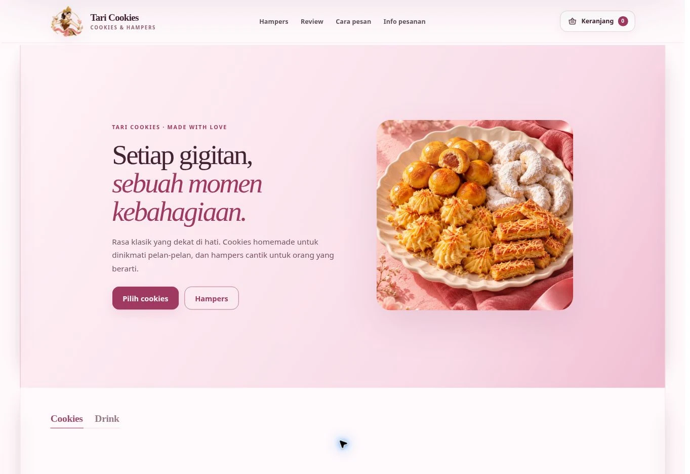
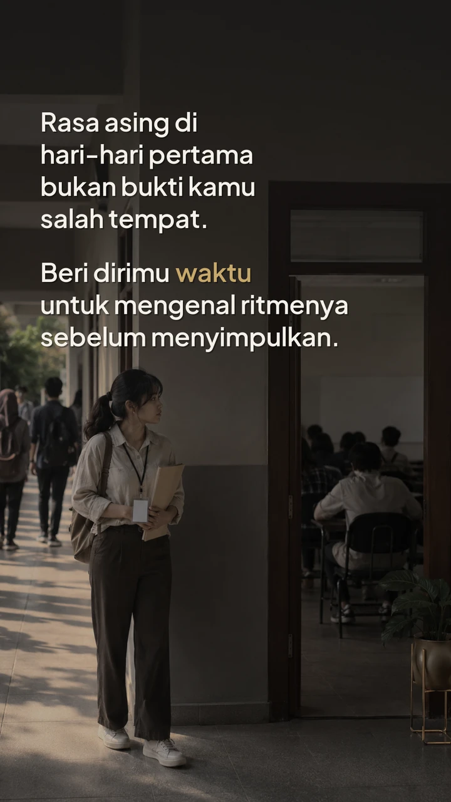
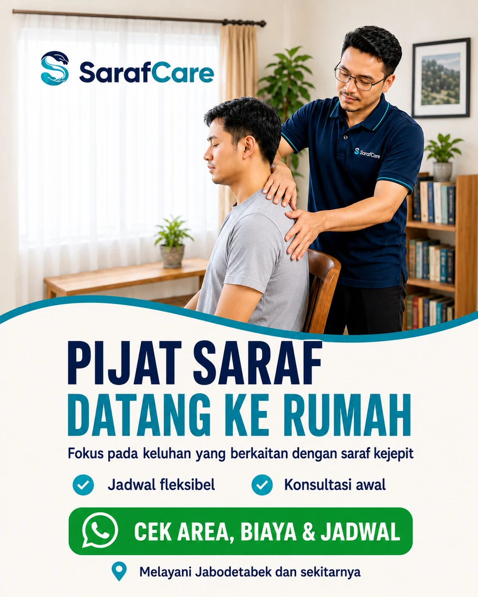

Customer Research · UX Design · Frontend
Tari Cookies
From finding a product to feeling ready to order.
Live website · Academic team project · 2026
Business Strategist & Digital Builder
I connect business thinking, creative strategy, and technology to turn complex ideas into thoughtful digital experiences.
Explore my workSelected work / 01—03
A closer look at the thinking,
the decisions, and the work.

Customer Research · UX Design · Frontend
From finding a product to feeling ready to order.
Live website · Academic team project · 2026

Content Strategy · Creative Direction · Audience Insights
A content practice that learns from its audience.
Independent media project · 2026

Campaign Strategy · Meta Ads · Customer Journey
From an ad to a conversation and a service that can be delivered.
Independent marketing experiment · 2026
Beyond the selected work
Independent systems and tools developed with AI assistance.
I like understanding why something matters, then figuring out how to make it work.
I'm an undergraduate Digital Business student at Universitas Cakrawala. My work moves between customer research, creative strategy, digital products, and experiments with AI.
Sometimes that means designing a clearer ordering journey. Sometimes it means shaping content or building a tool. What connects it is the thinking behind the decisions, and the care that goes into the result.
People, questions, and the decisions worth making.
Messages, content, and journeys that connect.
Interfaces and systems that turn ideas into something usable.
Timing, form, and interaction that make information easier to follow.
How I work
Good outcomes start with good questions.
Then they need to be made and checked.
Start with the people, the problem, and what is still unclear.
Choose a direction for a reason. Make the trade-offs explicit.
Connect the idea to a working experience, with care for the details.
Check the result, name its limits, and use what it teaches.
Let’s start a conversation
Strategy. Design. Digital possibilities.A digital experience, a creative direction,
or a problem worth exploring.
I'd be glad to hear about it.